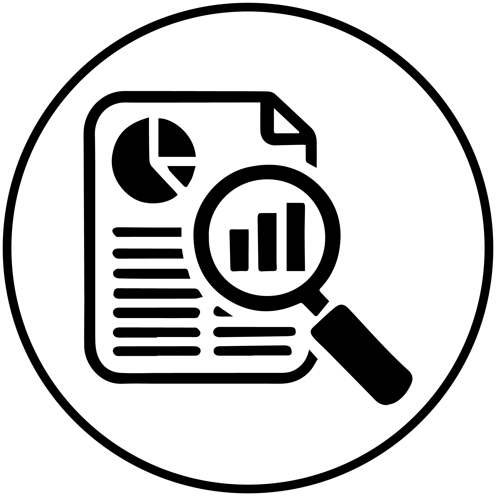
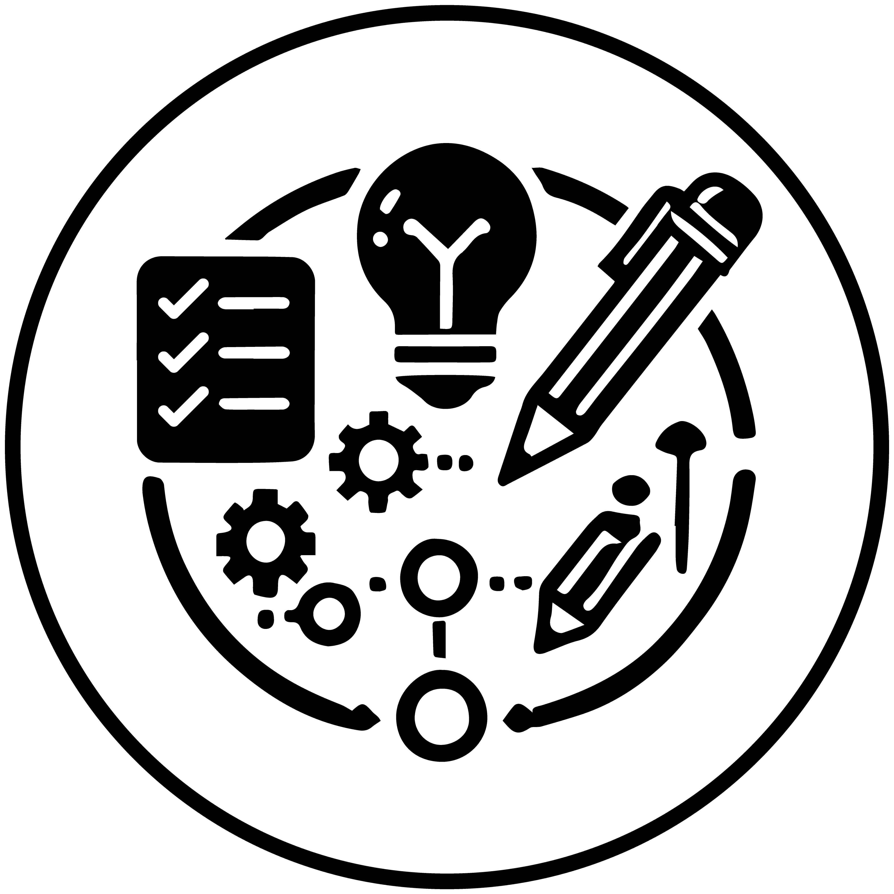
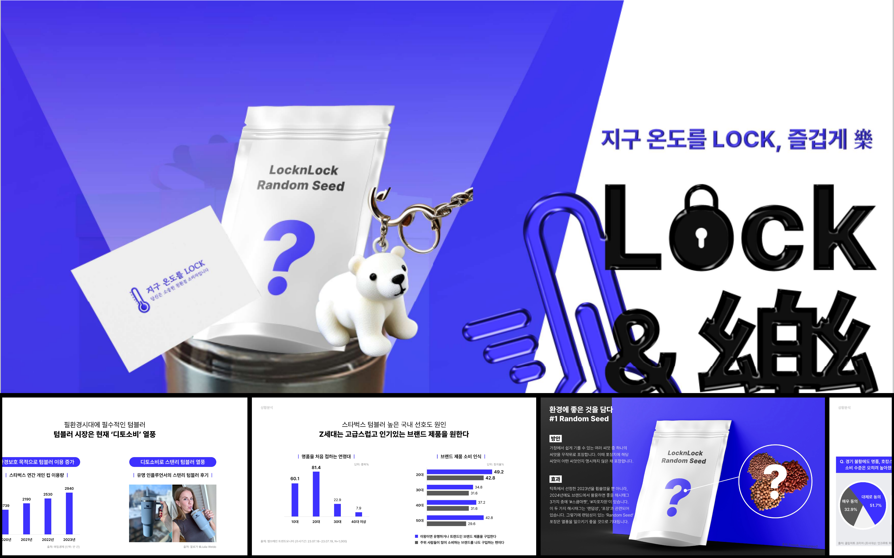

Contribution : 100% (n=1)
Role : Planning, research, PPT, and mockup creation
Skills Gained Through the Project :

Data analysis and market research skills

Creative planning skills

PPT and mockup design skills

I conducted thorough research, including market analysis, competitor study, and trend analysis, to set the direction of the project based on the latest data and industry trends.
Aiming to 'increase preference among young targets,' I developed the concept "Lock the Earth’s Temperature, Enjoyment and Elegance."
The goal was to enhance the appeal of LocknLock tumblers to the younger demographic by combining elements of fun, luxury, and eco-friendliness.
Additionally, I designed the product and short-form content ideas to effectively convey the project’s message.